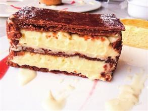
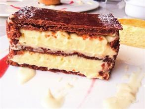

| 让快乐定格在哑舍
| 让快乐定格在哑舍
 关于我们
关于我们
 联系我们
联系我们
 

拿破仑的法语意思是“一千层”，所以也叫千层酥。一共三层焦黄色的千层酥皮，中间涂满馥郁香甜的香草奶油和卡仕达酱（也叫蛋奶油，Custard），千层酥入嘴便碎，黄油浓香满口乱窜，幸福感不过如此。
酥皮的制作过程极其繁复，起酥用到的大量动物性黄油遇体温即熔化，难以控制，一般这是最考验师傅功底的项目。另外有意思的是甜点的名字其实与拿破仑没什么关系。你可以想像法国人对拿破仑的崇敬和爱，就知道这款甜品对他们的意义了。拿破仑蛋糕配上新鲜浆果最理想，清新的草莓，酸甜的覆盆子，令味道更加香甜。
焦糖布丁是另一著名的法式甜品，Creme是奶油的意思，Brulee则是刚烘烤过的意思。上层是琥珀色酥脆的焦糖，吃时用小银勺轻敲表面，焦糖片破碎，下面热热的蛋奶布丁和焦糖片一起入口，醇香滑嫩，妙不可言。做这款甜品的关键是掌握火候和蛋奶比例，焦糖要恰到好处，冷藏之后亦是另一番风味。
闪电泡芙是法国每家甜品店都会有的点心，传说奶油和蛋糕结婚了，便有了奶油蛋糕，面包从此失恋了，它把对奶油的爱深深藏进了心底，于是有了泡芙。泡芙塔是法国传统的庆祝甜点，象征着幸福的泡芙被一个一个累积起来，高高的泡芙塔就是人们对满满的幸福的憧憬。
但是大家都有面对这诱人的泡芙纵情一咬，奶油溢出的尴尬。这对于苛刻讲究的法国女人来说简直是灾难，所以出现了指状的闪电泡芙，从此美味和优雅即可兼得。酥酥的皮里填满浓浓的巧克力和杏仁奶油酱，甜度能够让你忘乎所以，欲罢不能。

扫我了解更多